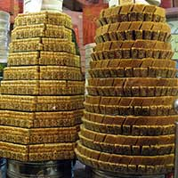
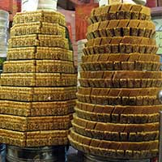

Shimmering Mosques and Winding Alleys: Damascus, Syria

Simply saying the name Damascus conjures up a mystical and mysterious air. Steeped in history and significance far reaching, Damascus shares the disputed title of longest inhabited city in the world with a few of its neighbors, but few of those cities can match Damascus in importance. Since recorded times, the city has been fought over and conquered by the Egyptians, then came King David and the Israelites, followed by the Assyrians, Persians, Alexander the Great, Nabataeans (of Petra fame), and then finally the Romans. After the Roman empire fell apart, the city came under Islamic rule and the Umayyad Caliphate chose Damascus as the new seat of Islam, built a magnificent mosque, and solidified the city's importance to the Muslim world. Today, Damascus is a thriving metropolis still oozing with history, but also embracing the future with reluctant arms. Syria is still a conservative Muslim country and the capital reflects that in many ways.
 
